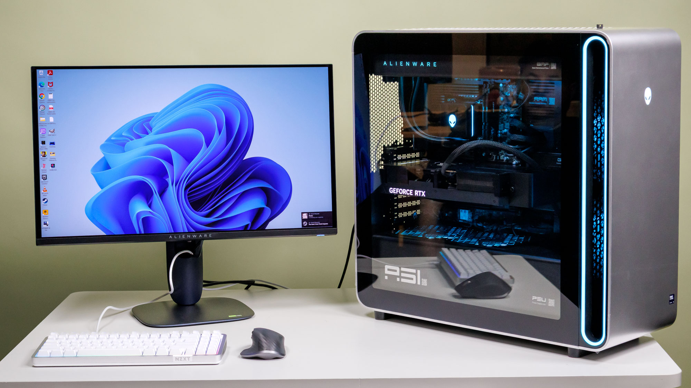
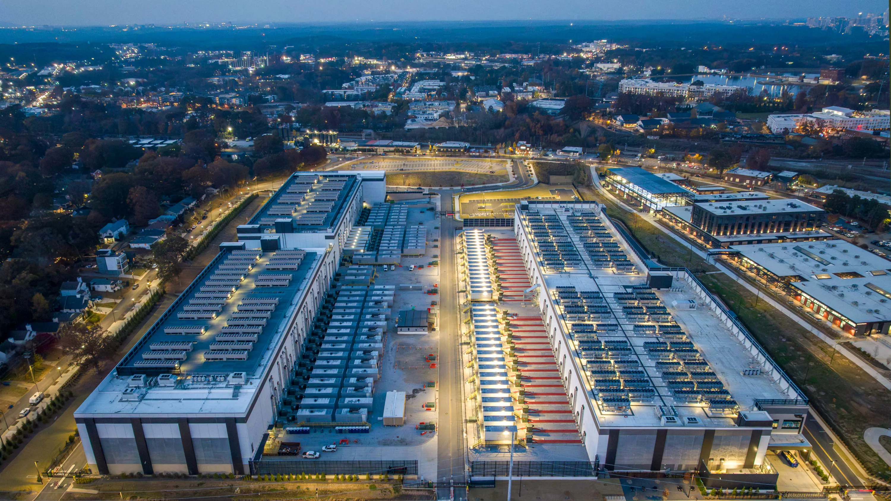
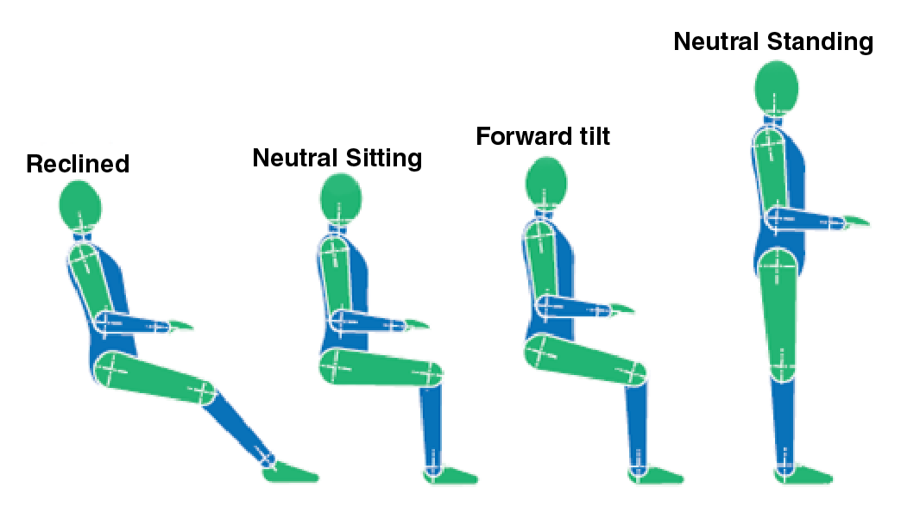

E-waste is defined as any discarded product with a plug or a battery that possesses toxic or hazardous substances (like mercury), which can pose severe risk to environmental and human health.

Environmental & Health Impacts
How Computers Affect Our Lives
1. E-Waste
E-waste is defined as any discarded product with a plug or a battery that possesses toxic or hazardous substances (like mercury), which can pose severe risk to environmental and human health.
According to the World Health Organization, around 62 million tonnes of e-waste was produced globally in 2022, and of that, only 22% was documented as formally collected and recycled. Improper processing of e-waste exposes workers to high levels of toxic substances such as mercury, arsenic, and cadmium, which can cause irreversible health challenges including cancers, neurological damage and miscarriages.
2. Energy Consumption
Personal computers around the world use around 140 TWh each year in total. They contribute to around 2% of total global CO2 emissions.
Data centers consume around 1.5% of all electricity globally. They are projected to electricity consumption reach approximately 950TWh by 2030 (nearly 3% of global electricity consumption).


3. Data Centers
Data centers use extremely large amounts of water to cool servers. Data centers
use extremely large amounts of water to cool servers.
Majority of data centers use electricity produced using fossil fuels. Global
data centers emit between 180-200 million tonnes of CO2 annually and they are
projected to reach 320-600 million tonnes by 2030.
4. Ergonomics

Use of computers for extended hours can result in issues such as muscular fatigue and visual fatigue. It is recommended to maintain a neutral posture when working with computers. It is also recommended to maintain good lighting levels and positioning to minimize glare and reduce visual fatigue.
Computers & Environment